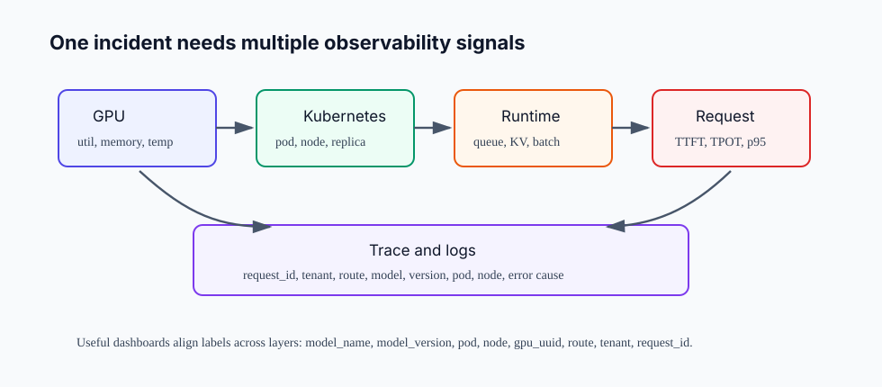
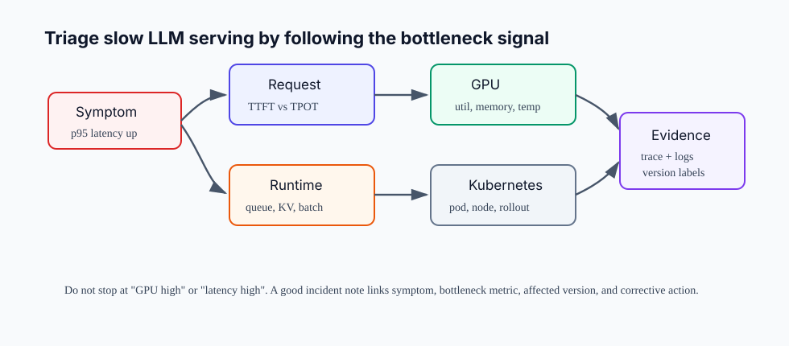

14장. Observability: GPU, runtime, request metric을 한 화면에 연결하기¶
13장까지는 GPU workload를 Kubernetes에 올리는 방법을 봤다. 이제 production 운영에서 가장 자주 부딪히는 질문이 나온다.
사용자는 "느리다"고 말하는데, 우리는 어디가 느린지 어떻게 증명할 것인가?
GPU dashboard만 보면 GPU utilization은 보인다. Runtime dashboard만 보면 queue와 KV cache는 보인다. API gateway metric만 보면 request latency는 보인다. 하지만 이 세 화면이 연결되어 있지 않으면 incident 때 원인을 추정만 하게 된다.
이 장의 독자 질문은 다음과 같다.
LLM serving observability는 어떤 metric과 label을 연결해야 p95 latency, GPU 병목, KV cache pressure, rollout 문제를 한 번에 추적할 수 있는가?
핵심은 하나다. Observability는 metric을 많이 모으는 일이 아니라, 같은 사건을 여러 계층의 signal로 다시 찾을 수 있게 만드는 일이다.
"GPU가 바쁘다"는 충분한 설명이 아니다¶
LLM serving에서 느려지는 이유는 여러 가지다.
| 사용자 증상 | 가능한 원인 |
|---|---|
| 첫 token이 늦다 | queue 증가, prefill 병목, model cold start, long prompt |
| token이 천천히 나온다 | decode TPOT 악화, tensor parallel communication, GPU memory pressure |
| 일부 tenant만 느리다 | routing skew, long context tenant, quota 정책, 특정 replica 문제 |
| 새 version만 느리다 | runtime config 변경, quantization regression, prompt template 변경 |
| GPU utilization은 낮은데 latency가 높다 | queue/scheduler 병목, CPU/tokenizer 병목, network, rate limiting |
| GPU utilization은 높은데 throughput이 낮다 | 작은 batch, KV cache fragmentation, memory bandwidth 병목 |
따라서 dashboard의 첫 화면은 "GPU 사용률"이 아니라 "사용자 증상에서 병목 계층까지 내려가는 지도"여야 한다.

네 종류의 metric을 분리해서 본다¶
LLM serving dashboard는 최소 네 계층을 가져야 한다.
| 계층 | 대표 signal | 답하는 질문 |
|---|---|---|
| Request | QPS, error rate, TTFT, TPOT, e2e latency, p95/p99 | 사용자가 무엇을 겪는가? |
| Runtime | queue, running/waiting request, KV cache usage, batch token, preemption | runtime 안에서 무엇이 막히는가? |
| GPU | utilization, memory used, memory bandwidth proxy, temperature, power, ECC, XID | hardware가 병목인가, 불안정한가? |
| Kubernetes | pod restart, node pressure, rollout version, replica placement, pending pod | platform 상태가 바뀌었는가? |
이 네 계층이 각각 다른 dashboard에 있어도 괜찮다. 중요한 것은 같은 시간대와 같은 label로 연결할 수 있어야 한다는 점이다. pod는 runtime metric과 Kubernetes metric을 이어 주고, node와 gpu_uuid는 GPU metric으로 내려가는 경로가 된다. model_name과 model_version은 rollout regression을 찾는 축이 된다.
vLLM metric은 runtime 내부를 보여 준다¶
vLLM은 OpenAI-compatible API server의 /metrics endpoint로 production metric을 노출한다. 공식 문서의 production metrics에는 vllm:kv_cache_usage_perc, vllm:num_requests_running, vllm:num_requests_waiting, vllm:e2e_request_latency_seconds, vllm:inter_token_latency_seconds, vllm:request_queue_time_seconds, vllm:time_to_first_token_seconds 같은 metric이 포함되어 있다.
이 metric들은 7장에서 배운 지표와 직접 연결된다.
| vLLM metric | 해석 |
|---|---|
vllm:time_to_first_token_seconds |
TTFT |
vllm:inter_token_latency_seconds |
token 사이 latency, TPOT에 가까운 signal |
vllm:e2e_request_latency_seconds |
request 전체 latency |
vllm:request_queue_time_seconds |
runtime scheduling 전 대기 시간 |
vllm:num_requests_waiting |
처리 대기 중인 request 수 |
vllm:num_requests_running |
execution batch에 들어간 request 수 |
vllm:kv_cache_usage_perc |
KV cache pressure |
vllm:request_prefill_time_seconds |
prefill 구간 시간 |
vllm:request_decode_time_seconds |
decode 구간 시간 |
이 표가 중요한 이유는 latency를 쪼갤 수 있기 때문이다. E2E latency가 올랐을 때 queue time이 같이 올랐다면 capacity/scheduling 문제일 가능성이 크다. TTFT만 올랐다면 prefill, queue, cold start, long prompt를 본다. Inter-token latency가 올랐다면 decode path, GPU compute, tensor parallel communication, KV cache 접근을 본다.
GPU metric은 DCGM exporter로 가져온다¶
NVIDIA DCGM exporter는 DCGM을 활용해 GPU metric을 Prometheus 형식으로 노출한다. README는 GPU metric exporter for Prometheus라고 설명하고, Kubernetes에서는 Helm chart 또는 manifest로 배포한 뒤 /metrics를 scrape하는 흐름을 제시한다.
GPU dashboard에서 먼저 볼 항목은 다음이다.
| GPU signal | 해석 |
|---|---|
| GPU utilization | compute가 실제로 바쁜가 |
| framebuffer memory used | model weight와 KV cache가 VRAM을 압박하는가 |
| SM clock / memory clock | throttling 또는 power state 변화가 있는가 |
| temperature / power | thermal 또는 power limit이 있는가 |
| ECC / XID / retired page | hardware fault 가능성이 있는가 |
| per-pod labels | 어떤 workload가 GPU를 쓰는가 |
GPU utilization은 단독으로 해석하지 않는다. GPU utilization 95%가 좋은 상태일 수도 있고, queue가 폭증하는 나쁜 상태일 수도 있다. 반대로 GPU utilization 30%인데 p95가 나쁘다면 CPU/tokenizer, network, scheduler, small batch, rate limit을 의심해야 한다.
Prometheus metric type을 잘못 쓰면 query가 틀어진다¶
Prometheus는 counter, gauge, histogram 같은 metric type을 제공한다. 공식 문서는 counter를 단조 증가하는 누적 값, gauge를 오르내릴 수 있는 값, histogram을 관측값을 bucket에 세는 방식으로 설명한다.
LLM serving에서 자주 쓰는 패턴은 다음과 같다.
| Metric type | 예 | Query 방향 |
|---|---|---|
| Counter | request count, token count, error count | rate()로 초당 변화량 계산 |
| Gauge | running request, waiting request, KV cache usage, GPU memory | 현재값 또는 max/avg |
| Histogram | TTFT, TPOT, queue time, e2e latency | histogram_quantile()로 p95/p99 계산 |
예를 들어 latency histogram에서 p95를 보려면 bucket을 rate로 바꾼 뒤 quantile을 계산한다.
histogram_quantile(
0.95,
sum by (le, model_name) (
rate(vllm:time_to_first_token_seconds_bucket[5m])
)
)
Request count는 counter이므로 현재값 자체보다 rate가 중요하다.
sum by (model_name) (
rate(vllm:request_success_total[5m])
)
Gauge는 rate를 붙이면 의미가 이상해질 수 있다. vllm:kv_cache_usage_perc 같은 값은 현재 pressure를 직접 보거나 time window의 max를 본다.
max_over_time(vllm:kv_cache_usage_perc[5m])
Label contract가 없으면 dashboard는 예쁘지만 쓸모없다¶
Production dashboard에서 가장 중요한 것은 label contract다.
| Label | 필요한 이유 |
|---|---|
model_name |
모델별 latency와 capacity 비교 |
model_version |
rollout regression 추적 |
runtime |
vLLM, TensorRT-LLM, SGLang 등 runtime 차이 |
pod |
runtime metric과 Kubernetes 상태 연결 |
node |
Pod와 GPU/node metric 연결 |
gpu_uuid |
같은 node의 특정 GPU 문제 추적 |
route |
chat/completions/embeddings/tool endpoint 분리 |
tenant 또는 workload_class |
noisy tenant와 SLO 등급 분리 |
request_id |
metric에서 trace/log로 이동 |
모든 metric에 모든 label을 붙이라는 뜻은 아니다. Cardinality가 폭발하면 Prometheus 운영이 어려워진다. 특히 request_id를 metric label에 넣는 것은 피해야 한다. 대신 request metric은 낮은 cardinality label로 집계하고, 개별 request 추적은 trace/log에서 request_id로 찾는다.
즉 label contract는 두 층으로 나눈다.
| 위치 | label 예 |
|---|---|
| Metric | model_name, model_version, route, pod, node, workload_class |
| Trace/log | request_id, user_id hash, prompt length, output length, error detail |
Trace는 "왜 이 요청이 느렸는가"를 복원한다¶
OpenTelemetry 문서는 trace를 request가 application을 통과하는 path로 설명한다. Metric은 "p95가 올랐다"를 알려 주고, trace는 "이 request가 gateway, router, runtime queue, prefill, decode, postprocess 중 어디에 머물렀는가"를 보여 준다.
LLM serving trace에는 다음 span이 유용하다.
| Span | 포함할 정보 |
|---|---|
gateway.request |
route, tenant, auth result, rate limit |
router.select_replica |
chosen pod, model version, retry/fallback |
runtime.queue |
queue wait, reason, concurrency |
runtime.prefill |
prompt tokens, cached tokens, prefill time |
runtime.decode |
output tokens, TPOT, stop reason |
tool.call |
tool name, latency, success/failure |
postprocess |
safety filter, formatting, serialization |
Trace와 metric은 서로 대체재가 아니다. Metric은 넓게 보고, trace는 깊게 본다. Incident 중에는 metric으로 범위를 좁히고 trace로 대표 request를 해부한다.
Incident triage는 순서가 있어야 한다¶
느린 request가 들어왔을 때의 기본 triage flow는 다음과 같다.

- 사용자 증상을 request metric으로 확인한다.
- E2E latency를 TTFT, TPOT, queue time으로 나눈다.
- Runtime queue, running/waiting request, KV cache usage를 본다.
- 같은 시간대의 GPU utilization, memory, temperature, error를 본다.
- Pod restart, rollout, replica placement, node pressure를 본다.
- 대표 request trace와 log로 증거를 닫는다.
이 순서를 지키면 "GPU가 높다" 같은 막연한 결론을 피할 수 있다.
Dashboard는 역할별로 나눈다¶
하나의 거대한 dashboard보다 역할별 dashboard가 낫다.
| Dashboard | 주요 질문 |
|---|---|
| Executive / SLO | 현재 service가 SLO를 지키는가? |
| Request latency | TTFT, TPOT, e2e, p95/p99가 어디서 깨지는가? |
| Runtime capacity | queue, KV cache, running/waiting request가 어떤가? |
| GPU health | utilization, memory, temperature, power, error가 어떤가? |
| Rollout | version별 latency, error, traffic split이 어떤가? |
| Tenant / workload | 특정 tenant, route, workload class가 noisy한가? |
첫 화면에는 alert와 연결된 golden signals를 둔다. Deep dive 화면에는 PromQL, per-pod breakdown, GPU UUID, trace link를 둔다.
Alert는 증상과 원인을 섞지 않는다¶
Alert는 두 종류로 나눈다.
| Alert type | 예 | 목적 |
|---|---|---|
| Symptom alert | p95 latency SLO violation, error rate spike | 사용자 영향 감지 |
| Cause alert | KV cache usage high, GPU XID error, pod crash loop | 원인 후보 감지 |
증상 alert 없이 cause alert만 많으면 on-call은 피로해진다. GPU utilization high는 항상 장애가 아니다. 반대로 p95 latency가 깨졌는데 GPU alert가 없다고 정상도 아니다.
좋은 alert는 다음 정보를 포함한다.
- affected model/version
- affected route/tenant/workload class
- current p95/p99 and threshold
- queue/KV/GPU/node 중 가장 의심되는 signal
- 최근 rollout 여부
- dashboard link와 trace query link
실습: 첫 LLM serving dashboard 설계¶
다음 표를 채우면 첫 dashboard spec이 된다.
| Panel | PromQL 또는 데이터 | 해석 |
|---|---|---|
| Request rate | rate(vllm:request_success_total[5m]) |
traffic 변화 |
| TTFT p95 | histogram_quantile(0.95, sum by(le, model_name)(rate(vllm:time_to_first_token_seconds_bucket[5m]))) |
first token 지연 |
| TPOT p95 | histogram_quantile(0.95, sum by(le, model_name)(rate(vllm:inter_token_latency_seconds_bucket[5m]))) |
decode 지연 |
| Queue time p95 | histogram_quantile(0.95, sum by(le, model_name)(rate(vllm:request_queue_time_seconds_bucket[5m]))) |
scheduling 대기 |
| Waiting requests | vllm:num_requests_waiting |
capacity pressure |
| KV cache usage | vllm:kv_cache_usage_perc |
memory pressure |
| GPU utilization | DCGM GPU utilization metric | hardware busy |
| GPU memory | DCGM framebuffer memory metric | VRAM pressure |
| Pod restarts | Kubernetes pod restart metric | platform instability |
| Version split | request rate by model_version |
rollout 영향 |
이 표를 만든 뒤 질문을 하나씩 던진다.
- p95 latency가 오를 때 queue time도 같이 오르는가?
- TTFT와 TPOT 중 어느 쪽이 먼저 움직이는가?
- KV cache usage가 높은데 waiting request가 늘어나는가?
- GPU utilization이 낮은데 queue가 늘어나는가?
- 특정 model version만 나쁜가?
- 특정 pod/node/gpu_uuid에서만 나쁜가?
이 질문에 답할 수 있으면 dashboard는 incident 도구가 된다.
실패 패턴¶
평균 latency만 본다¶
LLM serving은 tail이 중요하다. 평균은 정상인데 p95/p99가 무너지는 경우가 흔하다. 특히 long context와 burst traffic은 tail latency를 먼저 망가뜨린다.
GPU utilization을 success metric으로 본다¶
GPU utilization이 높다고 service가 좋은 것은 아니다. SLO와 throughput, queue, error를 함께 봐야 한다.
Label cardinality를 통제하지 않는다¶
모든 request_id나 user_id를 metric label로 넣으면 Prometheus가 감당하기 어렵다. High-cardinality 식별자는 trace/log로 보내고 metric label은 집계 축으로 제한한다.
Runtime metric과 GPU metric이 연결되지 않는다¶
pod, node, gpu_uuid mapping이 없으면 특정 vLLM queue 증가가 어떤 GPU의 memory pressure와 연결되는지 알 수 없다.
Rollout label이 없다¶
새 model이나 runtime config 배포 후 latency가 나빠져도 model_version 또는 runtime_version label이 없으면 regression을 찾기 어렵다.
정리¶
- LLM serving observability는 GPU, Kubernetes, runtime, request, trace/log signal을 연결하는 일이다.
- vLLM의
/metrics는 queue, KV cache, TTFT, inter-token latency, e2e latency 같은 runtime signal을 제공한다. - DCGM exporter는 GPU utilization, memory, temperature, clock, error 같은 hardware signal을 Prometheus로 노출한다.
- Prometheus counter, gauge, histogram의 의미를 구분해야 query가 맞다.
- Metric label은 낮은 cardinality의 집계 축으로 제한하고, request-level 상세는 trace/log로 보낸다.
- Incident triage는 사용자 증상, request metric, runtime metric, GPU metric, Kubernetes 상태, trace/log 순서로 좁힌다.
- 좋은 dashboard는 "무슨 일이 났는가"뿐 아니라 "어떤 model/version/pod/node/gpu가 관련됐는가"를 바로 보여 준다.
Source anchors¶
- vLLM Production Metrics: https://docs.vllm.ai/en/latest/usage/metrics/
- vLLM Prometheus and Grafana example: https://docs.vllm.ai/en/latest/examples/online_serving/prometheus_grafana/
- NVIDIA DCGM exporter: https://github.com/NVIDIA/dcgm-exporter
- Prometheus metric types: https://prometheus.io/docs/concepts/metric_types/
- OpenTelemetry traces: https://opentelemetry.io/docs/concepts/signals/traces/